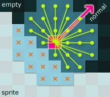

collision_normal

The purpose of this script is to determine what direction the sprite of an instance is facing at a particular point on or near the sprite, ie. a 2D analogue of a surface normal. It does this by sampling an area around a given point. As each point is sampled, if there is no collision, a vector is generated from the center of the sample area to the sampled point. These vectors are summed to produce an overall directional vector pointing away from any detected surface within the sampled area.
Move cursor near surfaces to see surface normal. Click to create bouncing ball.Download
- collision_normal(x1,y1,obj [,rad [,res]])
- Returns a 2D "surface normal" (in degrees) at a given point on or near an instance detected within a circular test area.
/// collision_normal(x1,y1,obj [,rad [,res]])
//
// Returns a 2D "surface normal" (in degrees) at a given point
// on or near an instance detected within a circular test area.
// Makes approximately pi*(rad*rad)/(res*res) collision calls.
// If no collision is found, (-1) is returned.
//
// x1,y1 point on the surface, real
// obj object or instance (or all), real
// rad radius of test area (default 4), real
// res resolution of test (default 1), real
//
/// GMLscripts.com/license
{
var xx = argument[0];
var yy = argument[1];
var obj = argument[2];
var rad = 4;
var res = 1;
if (argument_count > 3) rad = argument[3];
if (argument_count > 4) res = argument[4];
if (rad <= 0) rad = 4;
if (res <= 0) res = 1;
var nx = 0;
var ny = 0;
if (collision_circle(xx, yy, rad, obj, true, true)) {
for (var j=res; j<=rad; j+=res) {
for (var i=0; i<rad; i+=res) {
if (point_distance(0, 0, i, j) <= rad) {
if (!collision_point(xx+i, yy+j, obj, true, true)) { nx += i; ny += j; }
if (!collision_point(xx+j, yy-i, obj, true, true)) { nx += j; ny -= i; }
if (!collision_point(xx-i, yy-j, obj, true, true)) { nx -= i; ny -= j; }
if (!collision_point(xx-j, yy+i, obj, true, true)) { nx -= j; ny += i; }
}
}
}
if (nx == 0 && ny == 0) return (-1);
return point_direction(0, 0, nx, ny);
}else{
return (-1);
}
}
Contributors: xot, strawbryjam
GitHub: View · Commits · Blame · Raw